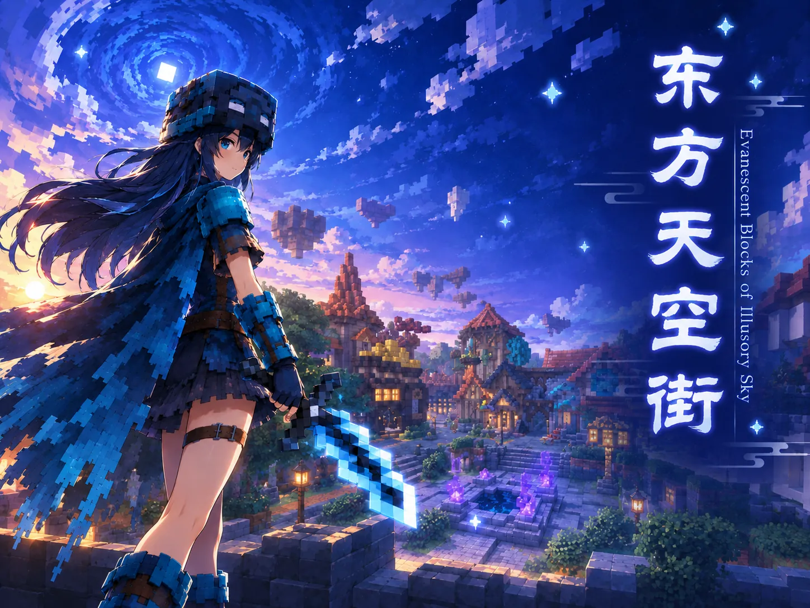
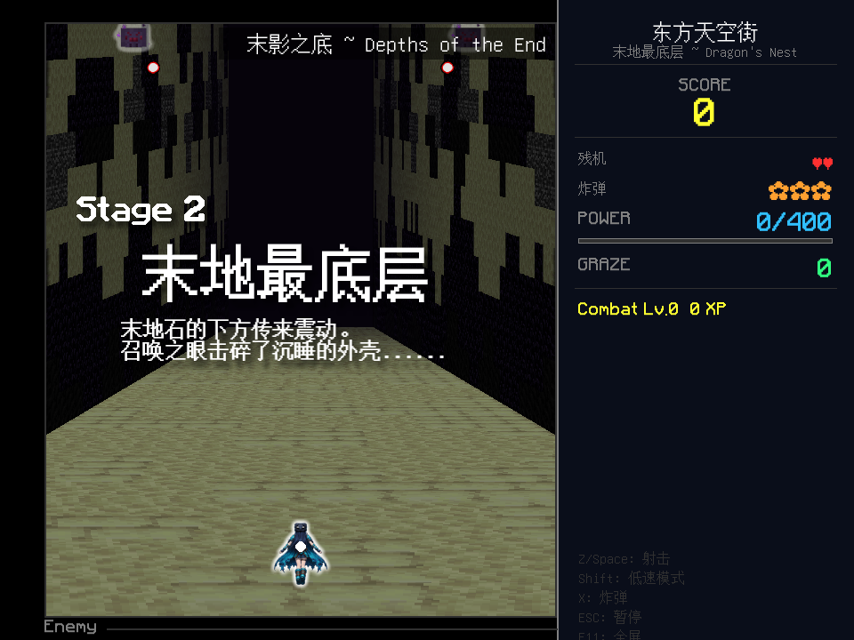
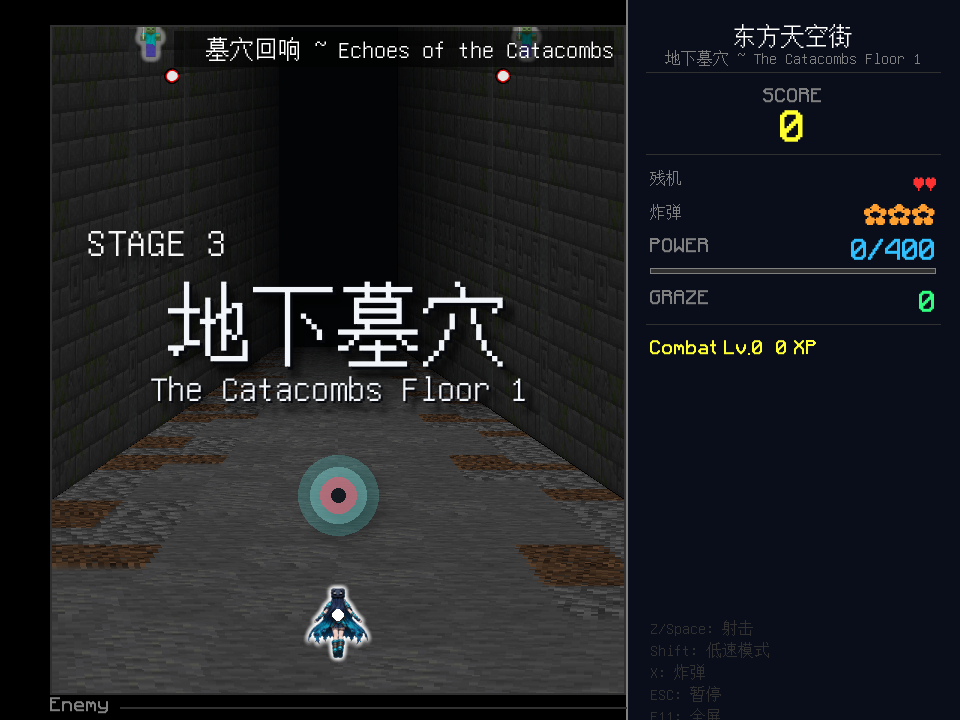
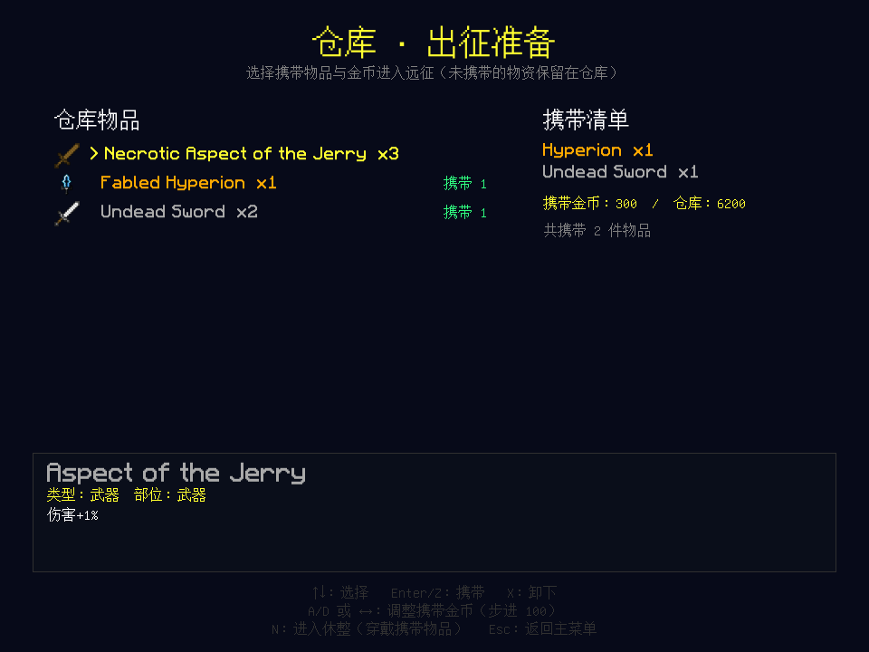
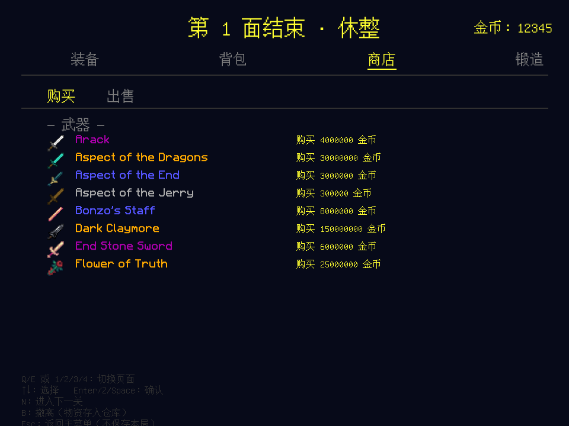

基于 Hypixel Skyblock 的东方 Project 同人弹幕射击游戏。斩落六重舞台，收集 Skyblock 风物品，在弹幕与符卡的交错中，抵达天空街的尽头。
◆ 进入下载这里是「東方天空街」—— 一座漂浮在夜空中的魔都。魔法、道具与弹幕相互交错，而你，将一路向上。
本作是东方 Project 的同人二次创作，将 Hypixel Skyblock 的收集成长与东方弹幕相融，做出属于我们自己的天空街。
弹幕为骨，收集成长为肉。
以高速移动与弹幕回避为核心的射击玩法。观察敌人的攻击规律，在密集的弹幕中寻找安全路线，同时抓住机会进行攻击。
在冒险过程中获得各种装备与道具。不同装备拥有不同的属性与效果，玩家可以根据自身的战斗需求进行搭配。
穿越多个关卡，击败沿途敌人并挑战各关卡 Boss。随着游戏进程推进，弹幕与敌人的攻击方式将逐渐变得更加复杂。
每位 Boss 都拥有独立设计的弹幕与符卡。通过观察、练习与熟悉攻击规律，寻找突破强敌的方法。
战斗中获得的装备、道具与资源将成为继续冒险的重要助力。探索不同的搭配方式，逐渐强化自己的战斗能力。
沿天空街一路攀升的猎场。
开发期预览，正式宣传图制作中。




开发进度与本作点滴。
官方网站初版上线，新增图鉴数据导出（61 件物品）。
仓库 / 撤离 / C 技能与物品掉落系统进一步打磨。
第 3–6 关与 BOSS RUSH / 符卡练习逐步完成。